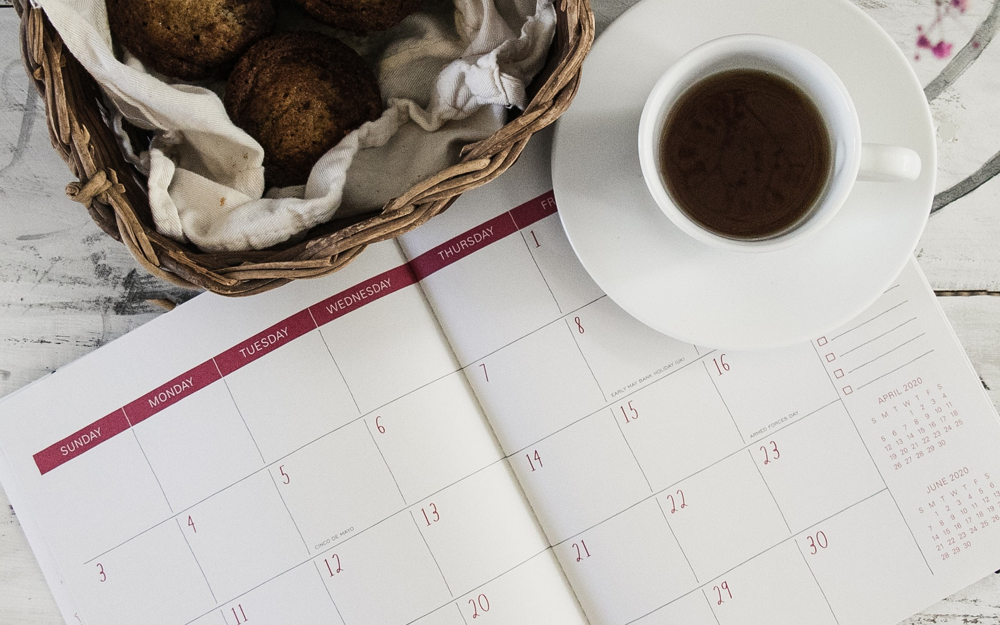
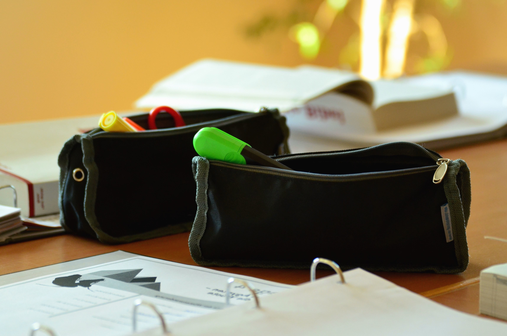

| [try these quick crafts] | ||
|---|---|---|
Planner |
Materials:
|
Steps:
|
Pencil Pouch |
Materials:
|
Steps:
|
[a note of motivation]
Hi everyone! I wanted to create this page for those of you who feel like you need that extra push of motivation to get you on the right track for studying. These crafts will try to help you get on the right path and ace all your classes. Just remember to give it your best and that's all you need life is not about acing every test, so be proud of your acomplishments. And with that, lets craft, study eddition!